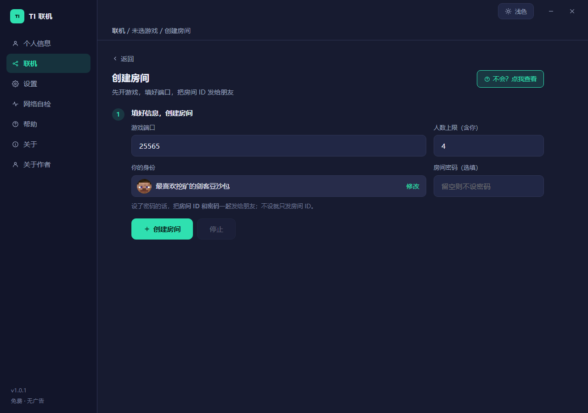
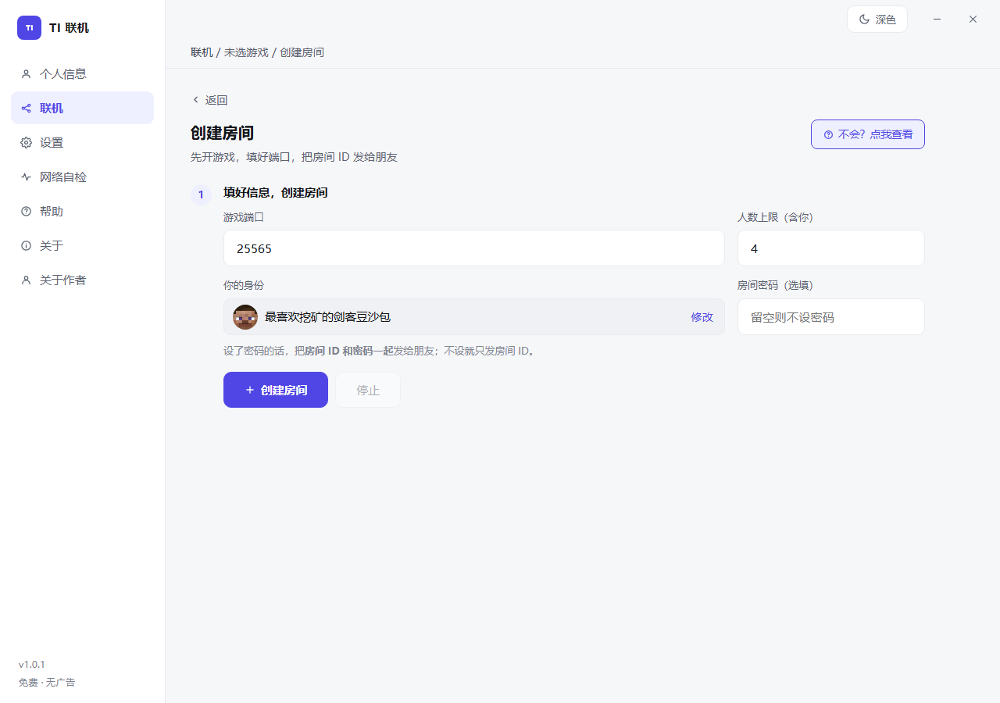
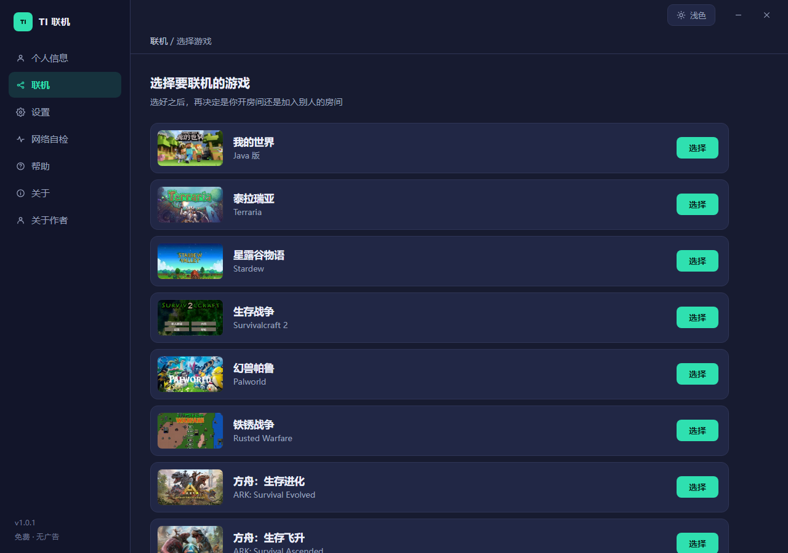
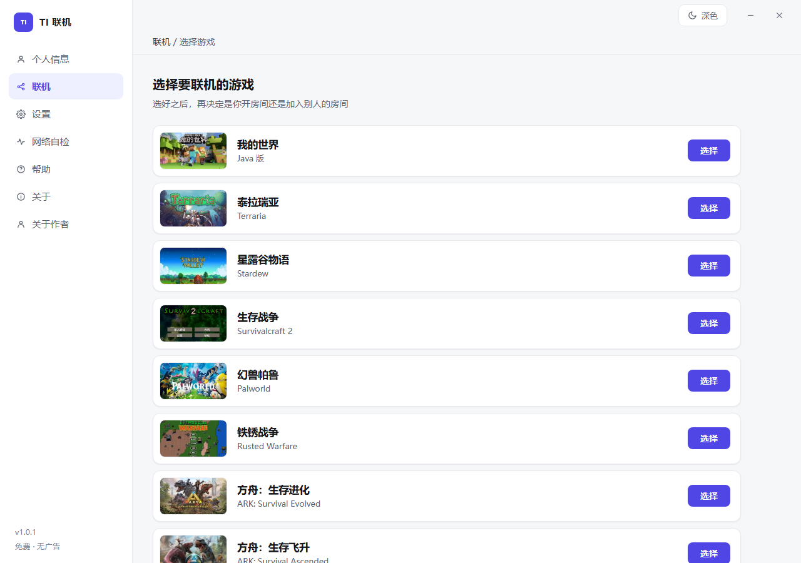
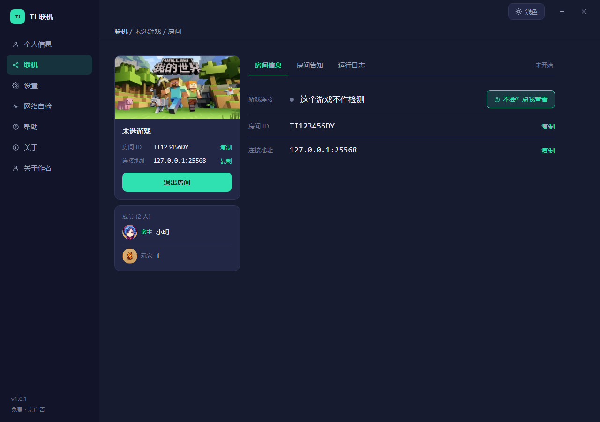
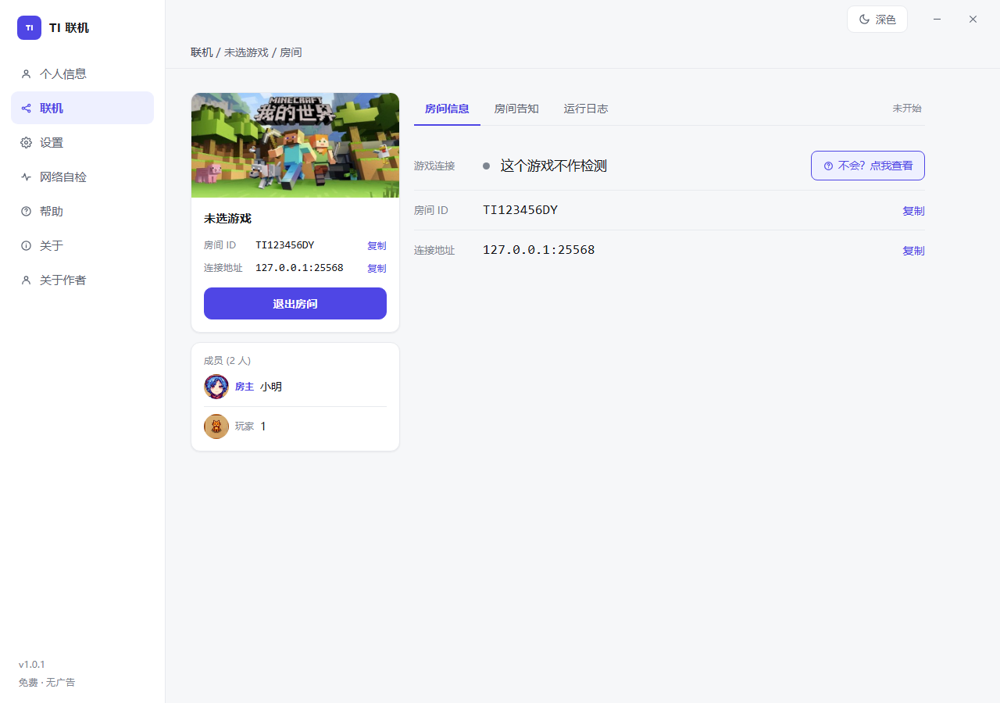
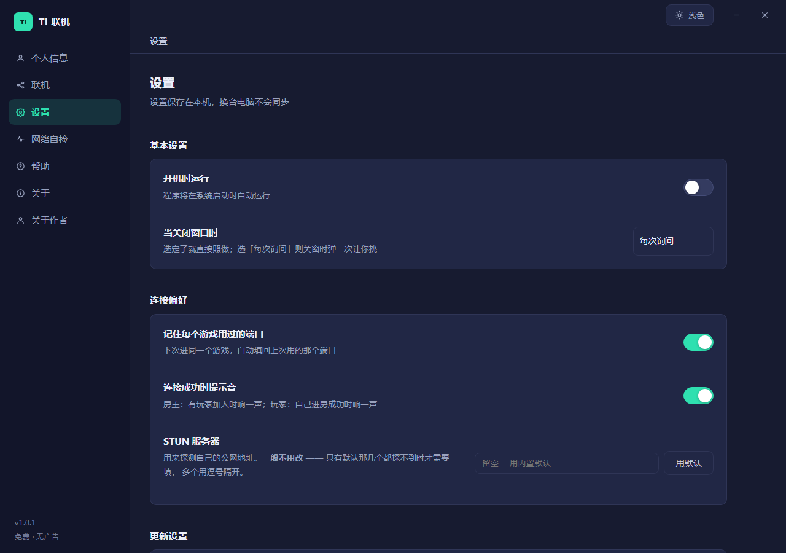
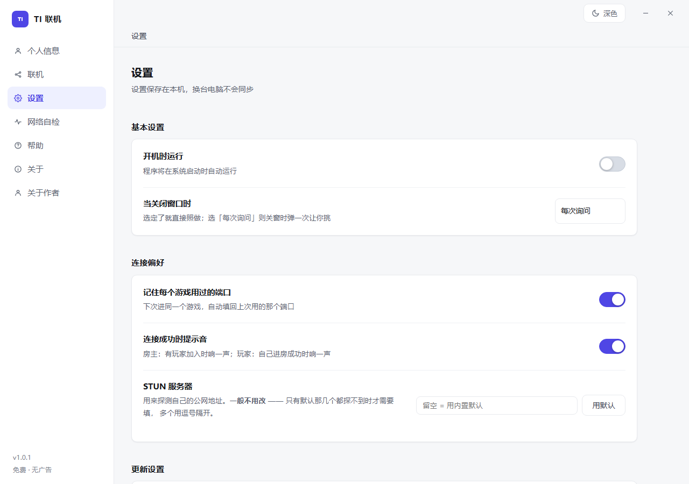
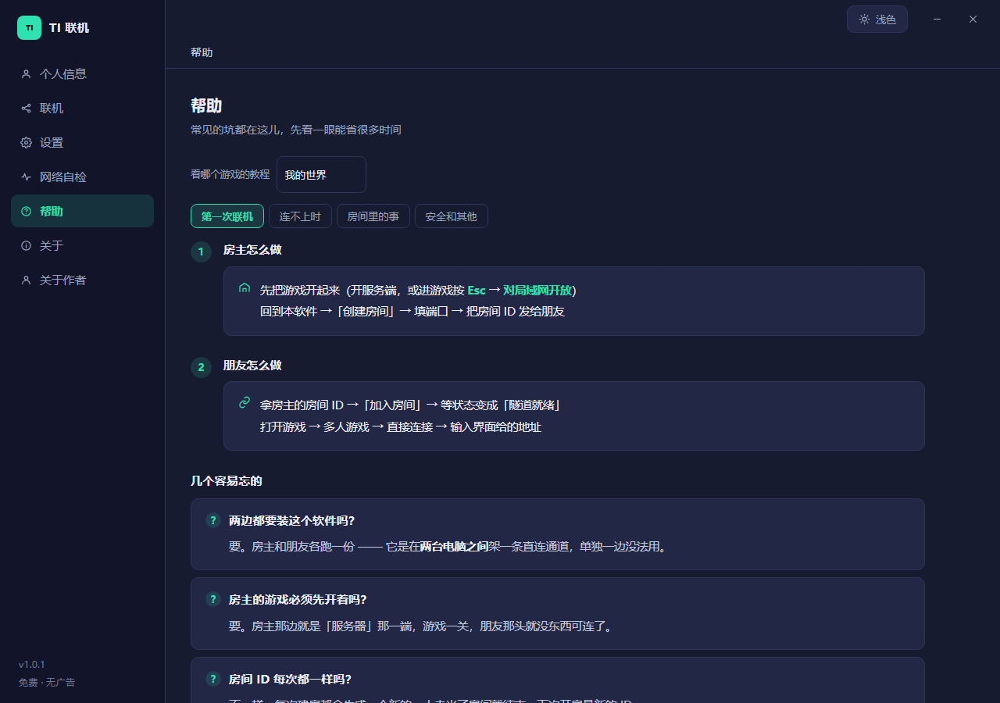
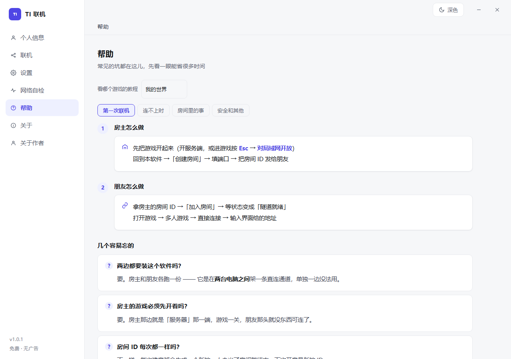

下面这些是已经配好的 —— 开房时选一下，端口和协议都替你填好了，不用自己查。
别的游戏也能用 —— 它只是在你和朋友之间开一条通道，TCP 和 UDP 都支持。 把游戏对外的那个端口号填进去就行。
同样是"让两台电脑连上"，但数据走的路完全不同。
常见的穿透工具是中转：你的数据要绕一圈经过它的节点，所以免费档总是限速限量。 这个工具是把两台电脑直接接通 —— 服务器只负责"让你们互相知道对方在哪"， 之后一个字节都不经手。
既然是直连，速度和流量只取决于你俩自己的网络 —— 不会用着用着突然被限速，也不会每个月卡你几个 G。
联机本身是两台电脑直连，中间不需要我们做任何事； 要用官方的「穿透服务器」帮忙牵线，得有一个账号。 它只用来放行连接和事后追责 —— 游戏数据不经过服务器。
下面这些就是打开软件看到的，不是设计稿。深浅两套配色跟着系统走，也能在右上角手动切。










1.0.1 · 2026-10-19
三步，两边各装一个 exe 就行。
房主打开软件，选「创建房间」，把游戏服务端开起来，然后把这串房间号发给朋友。
朋友打开同一个软件，选「加入房间」，填上房间号。
在游戏里连接提示的地址 —— 就这样，两边会直接连上。
两边都要装这个软件（一个 exe，双击即用）。 房主那边的游戏得先开着 —— 它是"服务器"那一端。
这个软件是作者自己联机玩的时候顺手做出来的，不收费、不卖会员、没有广告， 以后也不会变成那样。
唯一的要求是别拿它去干不该干的事。因为它不转发数据，本身也没有什么可"薅"的东西； 但既然挂着自己的名字，还是希望它干干净净的。
大部分问题这里都有答案。实在不行加群问。
先看软件给的提示，它会说明卡在哪一步：
· 「对方没探到公网地址」—— 对方的网络把 UDP 挡住了（公司网、校园网、运营商大内网），只能换个网络；
· 「他有公网 IPv6，你这边没有」—— 他的 IPv4 打不通（对称型 NAT），IPv6 是他唯一的路，而你接不住。你换一个能拿到 IPv6 的网络（手机热点常常有）；
· 「两边都没问题但就是不通」—— 双方都退出 VPN / 游戏加速器再试；还不行就让一个人开热点，两边都连这个热点，同一网络必定能通。
因为没有买代码签名证书 —— 一年要几千块，而这是个免费、一个人维护的工具。弹窗只看「有没有签名」，不代表检测到病毒。
点「更多信息」→「仍要运行」就行。下载页有带图的说明。
要。一边装、一边不装是连不上的 —— 隧道两端都得有这个客户端。
要，但很轻：填个邮箱收验证码就行，不用设密码。账号只用来放行连接和事后追责，游戏数据不经过服务器。
不限速。打洞成功之后是两台电脑直连，速度就是你们俩之间的真实网速 —— 服务器只交换了几十个字节的地址，没有能力给你限速。
连不上时会明确告诉你，不会假装在连。
它本质是条通道，TCP 和 UDP 都支持。13 个常见游戏已经配好端口，其余的选「自定义」手动填端口就行。
不能，只提供 64 位版本。现在的 Windows 10 / 11 基本都是 64 位。
安装版在「设置 → 应用」里卸载即可；绿色版直接删文件夹。
它在 %AppData%\p2plink 里存登录状态和设置，想彻底清干净就把那个目录也删掉。
一个人做的，免费，开源。
Go 写的核心，界面用系统自带的 WebView2 渲染（所以安装包很小）； 隧道走 KCP + smux，TCP 和 UDP 分流；密钥用 临时 ECDH 协商 —— 服务器只转发公钥，算不出会话密钥。
GPL-3.0。代码在 Gitee 和 GitHub 上都能翻 —— 一个要开你端口、要和你朋友的电脑建立直连的工具，凭什么让人信，只有这一条路。
一个人，业余时间。没有公司、没有广告、没有会员。 用着有问题可以加官方群 1107103581，或者直接开 issue。
120.227.*.*），仅用于排查故障。